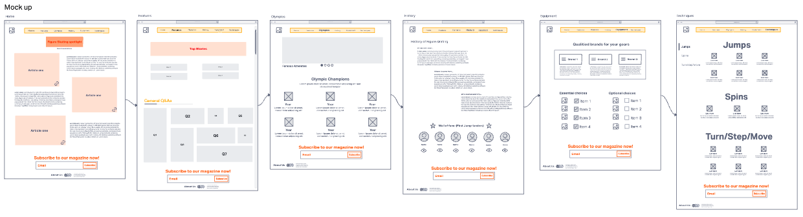

Name: Chen Hsin Yu
Introduction: I have chosen to do a website article about figure skating. It it meant for a wide range of audience, including skaters and those who are or might be interested in figure skating. The structure of my website is intended for a simple and refreshing look, hence the structure is mainly built by using grids.
Inspiration: Out of the many inspirations for this article, Yuzuru Hanyu (A male competitive figure skater) would be the main motivation for this idea. He has shared his energy through his performances which has gained him a lot of support as well as winning in Olympics. Other inspirations such as a female skater Alexandra Trusova, she was once interviwed during her training which is close to the championships and within her speaking, I've spotted a sentence which I think would bring courage and meaning to female figure skaters.
Accessability My website includes links from many articles as well as a video from youtube. And can also be accessed from the link provided by static web page
Usability: My website contains basic informations of figure skating that includes titles such as, equipment needed, history of figure skating as well as general question and answers of figure skating. Hence making the website multipurpose.
Learning: I had to learn how carousels are built as it was needed for one of my web page. The learning process took quite a bit of time, lots of trials and errors were carried out, but it was veyr worth learning due to its usability in the future. As well as stacking up with 'div' pointers in order to create and use the grid function. Implementing javscript was one of the hardest parts as of now I'm not very use to cross using programming languages.
Evaluation I: I think I've created a website that has a comfortable theme for readers to look at, as well as the layout which has made the website perform a neater look. The part that I think was the most successful was the how I implemented the
Evaluation II: I think the contents/informations can be improved, for example the equipments page could have more brands included as of the current version only had 3. As well as the use of different style and formate, such as audio files, books, social media links. I also think that more images could be used in terms of background and places that may look empty with only monochrome colors.
Resources: the list of resources I've used for this project includes:
list of websites used:
Home articles:
https://olympics.com/en/news/figure-skating-hanyu-yuzuru-gift-tokyo-dome
https://www.theguardian.com/sport/2022/sep/15/the-craziest-thing-ever-on-ice-teenager-malinin-lands-first-quad-axel-in-history
https://people.com/sports/kamila-valieva-recreates-viral-wednesday-dance/
https://www.mirror.co.uk/tv/tv-news/petrified-dancing-ice-star-make-29436371
features:
first row qna
https://www.rookieroad.com/figure-skating/
carousel-
image:
https://www.google.com/url?sa=i&url=https%3A%2F%2Fwww.si.com%2Folympics%2F2022%2F02%2F10%2Fnathan-chen-olympic-gold-medal-performance-redemption-rocket-man&psig=AOvVaw3a2pbQHJpVo9GDXmWdHtai&ust=1678764333657000&source=images&cd=vfe&ved=0CBEQjhxqFwoTCPjqvPr71_0CFQAAAAAdAAAAABAF
https://www.google.com/url?sa=i&url=https%3A%2F%2Fnews.northeastern.edu%2F2022%2F02%2F23%2Folympic-figure-skating-quad-jumps%2F&psig=AOvVaw3GDzPKj8m7CpnuGKEDnNfb&ust=1678764936447000&source=images&cd=vfe&ved=0CBEQjhxqFwoTCKDHpO_81_0CFQAAAAAdAAAAABAF
https://www.google.com/url?sa=i&url=https%3A%2F%2Fwww.eurosport.co.uk%2Ffigure-skating%2Fbeijing-2022%2F2022%2Fwinter-olympics-2022-sui-wenjing-and-han-cong-delight-chinese-crowd-to-win-pairs-figure-skating-gold_sto8806934%2Fstory.shtml&psig=AOvVaw1ZiURFS-8y0W59G4pynMUq&ust=1678765303830000&source=images&cd=vfe&ved=0CBEQjhxqFwoTCPDp2J7-1_0CFQAAAAAdAAAAABAE
links:
https://olympics.com/en/olympic-games/beijing-2022/results/figure-skating/men-single-skating
https://olympics.com/en/olympic-games/beijing-2022/results/figure-skating/women-single-skating
https://olympics.com/en/olympic-games/beijing-2022/results/figure-skating/pair-skating
history:
https://www.rookieroad.com/figure-skating/history/
https://www.youtube.com/watch?v=1gZDpzOm2dk
Equipments:
https://www.johnwilsonskates.com/
https://jacksonultima.com/
https://edeaskates.com/en/
https://www.rookieroad.com/figure-skating/top-5-figure-skating-brands/
technical:
https://www.realbuzz.com/articles-interests/sports-activities/article/key-ice-skating-techniques/
https://www.willies.co.uk/blogs/blog/figure-skating-glossary-everything-skaters-need-to-know
